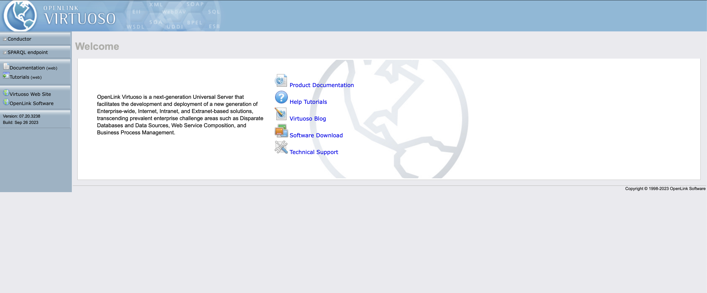
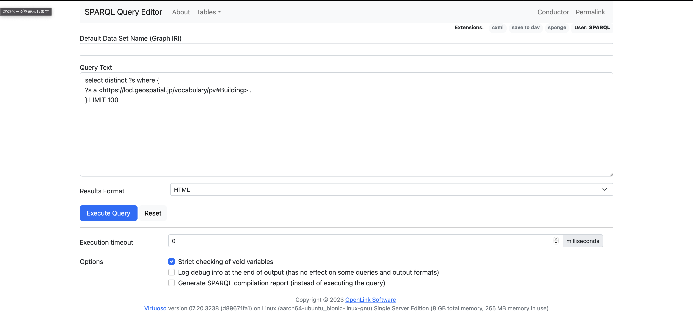
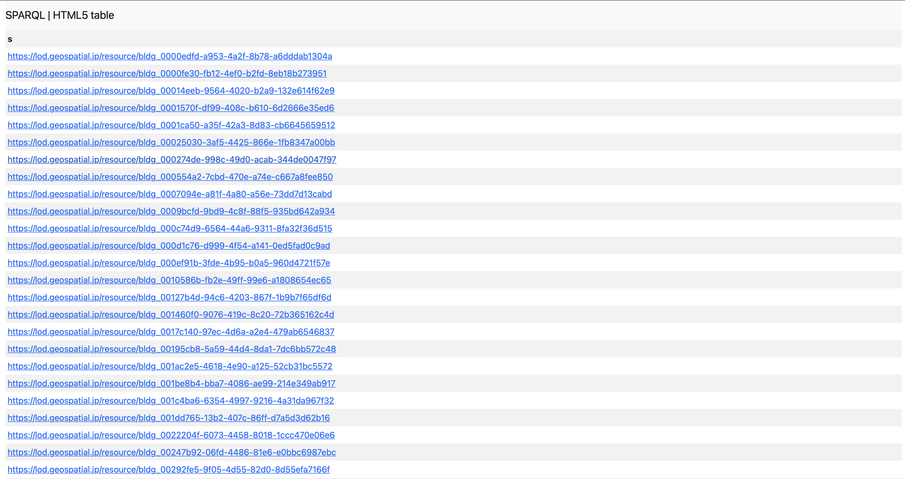

CityGMLをRDF変換するプログラムの利用マニュアル
利用手順
node.jsをインストール
ver.18以上を推奨します。
※node.jsは各自の環境にあわせてご用意ください。ウェブサイトからパッケージをダウンロードしてインストールすることもできます。
作業フォルダにプログラムをダウンロード
mainブランチのgml-to-rdfフォルダに保存されているファイルを、全て作業フォルダにダウンロードします。ここでは作業フォルダをworkとします。コマンドは全てworkで実行します。
必要なnodeモジュールをインストール
$ yarn
work/node_modulesが作成されモジュールがインストールされます。
CodeListを所定のディレクトリに格納
コードリストを次のように格納します。
work/data/codelists/*.xml
下記のコードリストは地域名を参照するために必須となっています。
Common_localPublicAuthorities.xml
変換するCityGMLを所定のディレクトリに格納
以下のように.gmlファイルを格納します。work/data/gmlFiles/配下には、メッシュIDごと、地域ごとなどの区分でサブディレクトリを作成してください。
work/data/gmlFiles/*/*.gml
データ変換
コードリストの変換
あらかじめdataフォルダの下にrdfフォルダを作成してください。
work/data/rdf
$ node xmlToTtl.js
以下のように出力されます。
work/data/rdf/*.ttl
GMLデータからJson-ldファイルへ変換
$ node gmlToJson_v2.js
以下のように出力されます。建物ごとに建物情報を記したJSON-LDファイルと不動産ID情報を記したJSON-LDファイルがそれぞれ出力されます。
※ここでxpathモジュールやxmldomモジュールが見つからないエラーが発生する場合があります。その際は、以下のコマンドでモジュールをインストールして下さい。
$ npm install xpath
$ npm install xmldom
建物のJSON-LD
work/data/export/json/building/*/*.jsonld
不動産IDのJSON-LD
work/data/export/json/realestateid/*/*.jsonld
Json-ldからNtripleファイルへ変換
$ node jsonToNtriple.js
以下のように出力されます。
work/data/export/Ntriple/building/*/*.nt
work/data/export/Ntriple/realestateid/*/*.nt
RDFストアにデータをロードする
以下は参考情報です。
ここでは、RDFストアとして、Virtuosoを用いて生成したRDFをロードします。
Virtuosoのdockerイメージを入手
いくつかのイメージが公開されているため、適当なイメージを選んでpullします。
$ docker search virtuoso
NAME DESCRIPTION STARS OFFICIAL AUTOMATED
encoflife/virtuoso 0 [OK]
virtuosolearning/circle-ci-2 Circle CI 2 build 0
tenforce/virtuoso Docker for hosting Virtuoso. 44 [OK]
openlink/virtuoso-opensource-7 OpenLink Virtuoso Open Source Edition v7.2, … 10
dbpedia/virtuoso-sparql-endpoint-quickstart Loader container that allows the deployment … 0
askomics/virtuoso docker virtuoso, based on alpine 0 [OK]
$ docker pull openlink/virtuoso-opensource-7
Virtuoso用のボリュームを作成します。
$ docker volume create --name main-virtuoso-data
main-virtuoso-data
Dockerイメージを起動します。
$ docker volume ls
DRIVER VOLUME NAME
local main-virtuoso-data
$ docker run -d --restart=always --name main-virtuoso \
-p 8890:8890 -p 1111:1111 \
-e DBA_PASSWORD=dba \
-e SPARQL_UPDATE=true \
-e DEFAULT_GRAPH=http://www.example.com/graph \
-v main-virtuoso-data:/data \
-d openlink/virtuoso-opensource-7
05ddba27a031a5d5bf7952a53e332f72655a3d63412f462747aa7d98a9def4e6
$ docker ps
CONTAINER ID IMAGE COMMAND CREATED STATUS PORTS NAMES
7f73ea2c9f38 tenforce/virtuoso:1.1.1-virtuoso7.2.4 "/bin/bash /virtuoso." 15 seconds ago Up 14 seconds 0.0.0.0:1111->1111/tcp, 0.0.0.0:8890->8890/tcp main-virtuoso
起動したら、ブラウザからもアクセスできるようになります。
http://localhost:8890

データをロードする
virtuosoでは、isqlを使ってデータをバルクロードできます。
コンテナ側でアップロードを許可するディレクトリを追記しておきます。
# virtuoso.ini
DirsAllowed = ., ../vad, /usr/share/proj, ../database/Ntriple
設定したディレクトリにファイルをコピーします。
$ docker cp /Users/iwao/repositories/gml-to-rdf/data/export/Ntriple/building/22221 05ddba27a031a5d5bf7952a53e332f72655a3d63412f462747aa7d98a9def4e6:/database/Ntriple
isqlを起動します。
$ docker exec -it 05ddba27a031a5d5bf7952a53e332f72655a3d63412f462747aa7d98a9def4e6 isql
ファイルをロードします。
SQL> ld_dir_all ('../database/Ntriple','\*.nt', 'https://lod.geospatial.jp/resource/graph/v1/');
SQL> rdf_loader_run();
ロードが完了したら、SPARQLをリクエストします。
http://localhost:8890/sparql/

試行的に以下のクエリを入力して、"Execute Query"ボタンを押下します。
select distinct ?s where {
?s a <https://lod.geospatial.jp/vocabulary/pv#Building> .
} LIMIT 100

結果が取得できれば成功です。